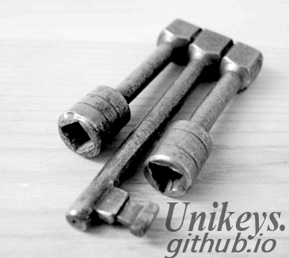
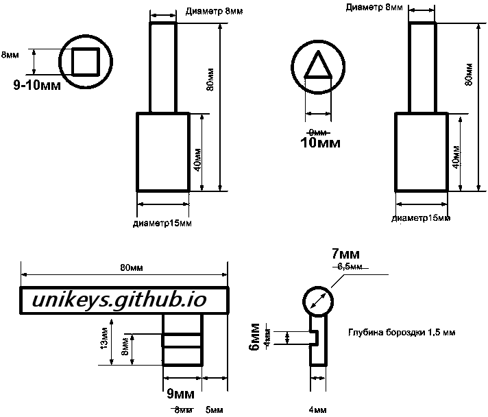
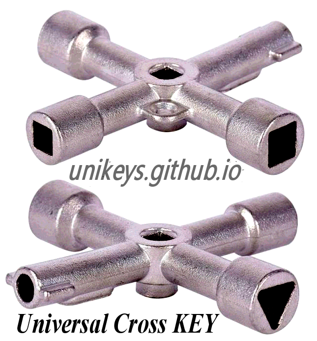
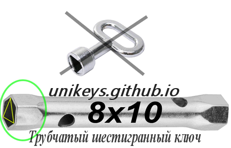

| Ключи от поезда | |||
|
|
Ключи от поездаСуществуют три основных ключа от поезда:Трёхгранка, Флажок, Квадрат. Основной ключ - это трёхгранка, на неё закрывают практически все двери и шкафы в поезде, а также электрошкафы и лифты в зданиях. На флажок закрывают лишь наружные двери выхода из вагона на улицу. На квадрат закрывают разные технические отсеки - вентиляцию и т.д.  Трёхгранка 10x10 Квадрат 9x9 Флажок: cтержень 80x7, бородка 9x13, канавка 1x6, от конца ключа до начала канавки 3мм  С флажком дела плохи, в магазинах заготовок таких размеров не продают, придётся делать его самостоятельно или заказывать на заводе. А вот с квадратом и трёхгранкой всё гораздо проще: Можно заказать из китая Universal Cross KEY, цена не больше 250р  Более бюджетный и доступный вариант: трубчатый шестигранный ключ 8x10, цена которого не больше 50р, его можно купить практически в любом магазине запчастей для автомобиля  Новый шестигранник скорее всего по началу будет очень туго влазить в трёхгранный замок, поэтому первые несколько раз придётся применить небольшую силу, после чего его внутренняя часть подгонится под треугольник. Проект в разработке | ||
| © Дёшево и Сердито | |||